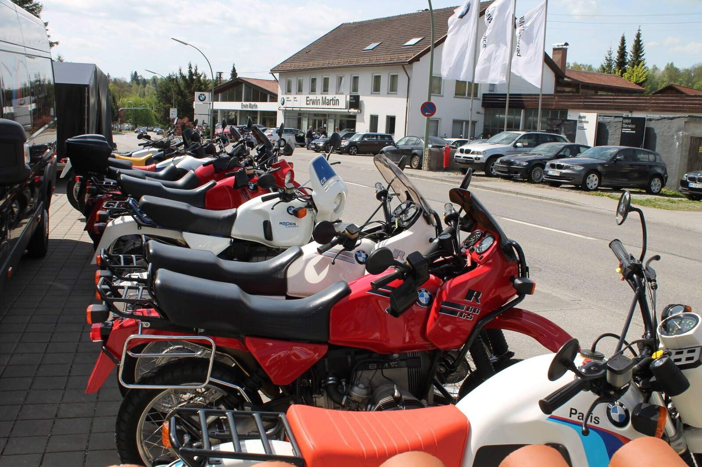
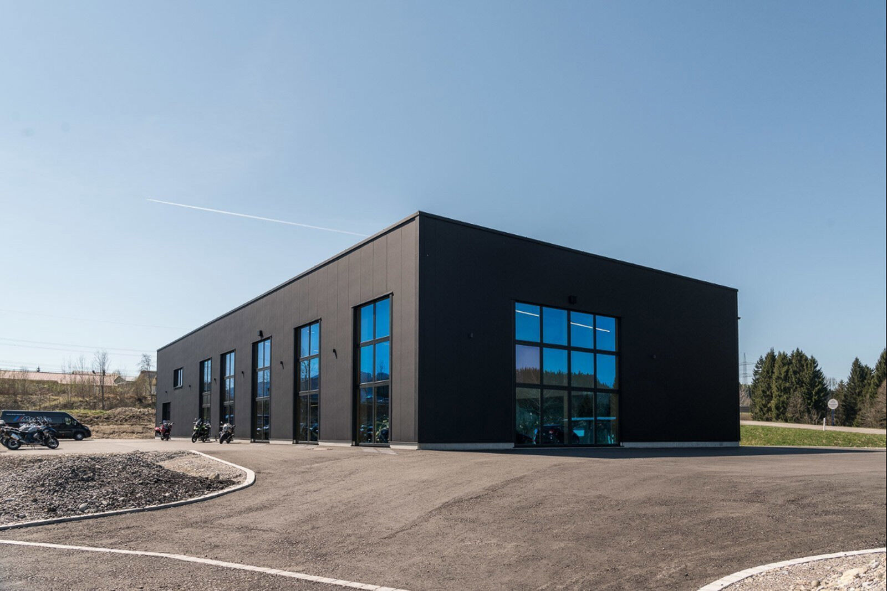

BMW Motorrad MartinFamilienbetrieb





1954
Erwin Martin gründetAm 1. April 1954, in Ingenried bei Schongau.
BMW MotorräderSeit 1967 BMW Vertragshändler, seit 1969 auch für Motorräder.
Neubau im AllgäuOy-Mittelberg: 1.000 Quadratmeter rund ums Motorrad.
WeyarnRund 3.500 Quadratmeter, Home of Martin Edition.
Dritte GenerationDrei Häuser am Alpenrand. Und eine eigene Manufaktur.
BMW
MotorradMartin
MotorradMartin
Seit 1954.In Familienhand.
Schongau · Weyarn · Oy-Mittelberg